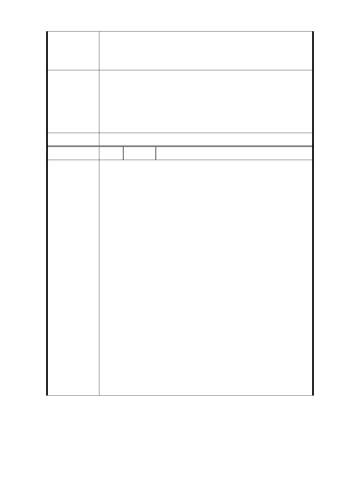

安全。
備註：本建議案已獲 109 位里民支持，連署名單詳如附件，盼北
市府社會局及都發局等相關單位重視民意列入規劃參考。
一、 公共開放空間部分如編號 1。
二、 本案係配合本府公共住宅興建策略，於考量地區發展
市府回覆
條件及公共設施容受力前提下，將原計畫商業區部分
意 見 容積挪作公共住宅使用，適度提高公共住宅戶數，並
透過設計手法及界面處理，兼顧都市景觀、公共住宅
品質及地區生活環境。
委 員 會 決 議 同編號 1
編 號 18 陳情人 胡○華
首先，感謝市府團隊對此開發案的用心及努力，長久以
來基於讓開發案能順利進行，身為居住於大道路側的我們，
每次開會都鮮少表達意見。但是，對於這次的簡報，讓我們
深深地感覺到（會吵的小孩才有糖吃）的不變定律。在此，
位於大道路側之居民，對於此次開發案之規劃提出下列之提
議：
1. 基地周邊都退縮15公尺看似公平，但是高樓及量體大之
建物，就像柏林圍牆般遮擋了大道路側，居民們將再也
感受不到涼爽夏季風及溫暖的陽光。(見附圖P.1)
2. 由於基地量體規模的不均，對於開發時對大道路側居民
陳情理由
之房舍的影響，是否會造成大道路側既有房屋基地之壟
起效應？(見附圖P.2)
3. 為了留出北側之空地進而擠壓原設計之配置，導致中間
高樓間距變小，是否會有高樓風切之效應？(見附圖P.3)
4. 建議將高樓建物設置於基地四角，中間留置大型公園以
利居民於共享。(見附圖P.4)
5. 中繼住宅之出入口建議設於接近交通方便之基地四角，
既安全又便於管理。(見附圖P.5)
6. 建議能否降低建築密度，打破2800戶之迷失，並請考慮
日後增設戶數之人口，對於附近環境(舉凡交通、景觀、
人文、行政區域等)之衝擊。
- 30 -